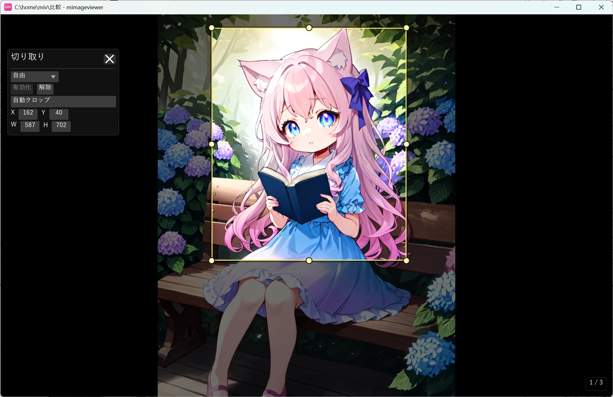

切り取りで出力範囲を決める
画像の一部だけを出力したいときに使う「加工用の切り取り」です。範囲を決めると、表示では範囲外が 暗くなり、書き出し・本棚に切り取った画像が入ります。元画像は書き換えない非破壊なので、 切り取り範囲はあとから何度でも変更できます。左パネルの表示トリム（読むための表示専用の 余白カット）とは別機能で、こちらは出力に反映されるのが違いです。
切り取りを始める
画像・ZIP 内画像・PDF ページをフルスクリーン表示中に、左パネル（画像補正パネル）上部の 切り取りアイコンから始めます。左パネルの出し方は、上部バーの ℹ ボタン （I または Tab）で「通常ホバー」と「クリック表示」を切り替えられます。通常ホバーでは 画面左端にマウスを寄せると開き、クリック表示では左端に現れる呼び出しバーをクリックすると開きます。
範囲を決める
- ドラッグ：画像の上をドラッグして切り取り範囲を作成します。枠やハンドルを掴めば、あとから移動・リサイズできます。
- 自動クロップ：四辺の単色余白を検出して範囲を自動で設定します。スキャンの黒枠や白い余白を落としたいときに便利です。
- アスペクト比：パネル上部で「自由」のほか固定比率を選ぶと、範囲がその比率に保たれます。辺のハンドルでは反対辺を、角のハンドルでは反対角を固定して大きさが変わります。
- 数値で指定：パネルの X・Y・W・H に数値を入れて、位置とサイズを正確に合わせられます。
- 一時パン：Space+左ドラッグで表示位置を動かせます。マウスホイール / Ctrl+ホイールでズームして、細かく合わせられます。
範囲を決めている間は範囲外が暗く表示されるので、仕上がりのフレーミングをその場で確認できます。

表示トリムとの違い
mImageViewer には「切り取り」と「表示トリム」の 2 つがあり、出力に反映されるかどうかが違います。取り違えに注意してください。
| 役割 | 出力（保存・書き出し・本棚） | |
|---|---|---|
| 切り取り（このページ） | 出力する範囲そのものを決める | 反映される（切り取った画像になる） |
| 表示トリム | 読むための表示専用の余白カット | 反映されない（元画像も出力も変わらない） |
表示トリムの使い方は明るさ・色を補正する（＋表示トリム）で説明しています。
切り取った結果を残す
切り取り範囲は元画像を変えずに設定されます（左パネルの表示専用「表示トリム」とは別で、切り取りは書き出しに反映されます）。別ファイルへ反映するには、次のどちらかで焼き込みます。
- エクスポート（Ctrl+E）：切り取りを確定し、いま見えている表示結果を、切り取った範囲で別ファイルへ書き出します。
- 本棚に追加：本のページとして原寸で焼き込むときにも、切り取りが反映されます。
切り取りモードは Esc で終了できます。加工結果をファイルにする流れ全体は 加工の全体像（非破壊編集の流れ）を参照してください。